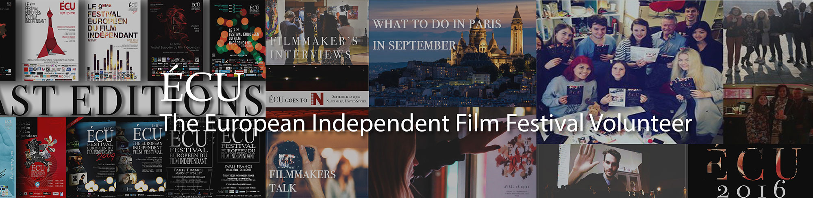

March 2016
Mobile UI Design
Interaction Designer
The European Independent Film Festival, Paris
Advised by president of ÉCU Scott Hillier
ÉCU mobile app design
Maintain the order of ÉCU on-site
ÉCU – The European Independent Film Festival is dedicated to the discovery and advancement of the very best independent filmmakers from around the world. ÉCU provides a unique platform for risk-taking storytellers to reach the broadest audiences possible. It is held annually.
The 11th edition of ÉCU was held in Paris on 8th ~ 10th April 2016. As a volunteer, I designed a mobile App for the festival which enabled audiences to get information easily and conveniently. Also as a staff, I maintained the order of ÉCU on-site.
I designed the application interface and used appmakr to make it on-line available for desktop browser, Android iOS and other mobile devices.
Except two fomal staffs (a president and a manager), the others who work in the ÉCU team are volunteers. Most of them are students and enthusiastic about movies. We have around 15 people each year to prepare for the film festival. Some people work longer in the team while some just work in a short period. All of us did make contributions to the film festival together. When I worked in the team, I met many new friends from different countries. Even though it was a short stay which just lasted one month, It was a memorial and fun experience. I learned how to get familiar with a new organization in a short time and get into my role quickly and efficiently. Thanks to this experience, my communication skills have been improved. I was not shy any more to talk to new people and I would like to ask questions bravely.
© 2017 My Profile. All Rights Reserved | Design by Chenghong